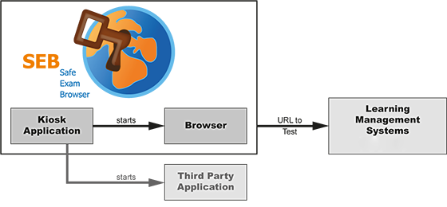

About SEB |
English Deutsch »Documentation Windows »Documentation for Mac OS X |
Safe Exam Browser is a webbrowser-environment to carry out online exams safely. The software changes any computer into a secure workstation. It regulates the access to any utilities like system functions, other websites and applications and prevents unauthorised resources being used during an exam.
Concept of SEB
General Concept
SEB runs on a local computer and it is connected via the internet to a learning management system (LMS). Generally SEB works with any web based LMS and other kind of web based exam systems. Currently the two wide spread learning management systems Moodle and ILIAS offer a quiz mode specifically compatible with SEB.
System Architecture of SEB
SEB consists of a kiosk application and a browser part, which are running on a examination computer. The kiosk application locks down the examination computer, the browser part comunicates via the internet (or a LAN) with the quiz module of a LMS running on a server.

Schematic illustration of a online exam with Safe Exam Browser and a LMS, for example ILIAS or Moodle. In addition a third party application can be allowed to run at the same time, for example Excel or R
Components of the System Architecture
The illustration above shows the two internal components which SEB consists of, the kiosk application and the browser part. The third part of a SEB exam environment is build into the supported LMS. Optionally one or several third party application(s) can be allowed to run during an exam and are started by the SEB kiosk application.
- The kiosk application locks down the computer and starts the SEB browser plus optional third party applications. Since this application has to control miscellaneous OS functions, it is designed very system specific.
- The SEB browser connects with the preset URL of the LMS exam page and doesn't show any navigation elements like address bar, search engine field etc. The Windows version of SEB uses the Mozilla Gecko browser engine, either in the form of Portable Firefox or XULRunner. SEB for Mac OS X uses the WebKit browser engine.
- The learning management systems contain so-called quiz modules, which are used for onlline exams. SEB relies on extensions/skins to the quiz modules in Moodle and ILIAS for safe exams. With these extensions the user interface of the LMS is reduced to just contain navigation for the exam (no links to other pages outside the quiz) and no other undesirable features like messaging. An exam can also be configured to run only with SEB, not another browser. These SEB LMS extensions, which originally had to be installed separately to achive this connectivity with SEB, have been integrated into the LMS in recent versions of ILIAS and Moodle.
System Architecture of SEB for Windows
Safe Exam Browser for Windows consists of the SEB kiosk application, which opens an own Windows desktop and catches system commands like keyboard shortcuts (for example ALT+F4) and right mouse-button clicks. The second part is XULRunner, a runtime package from the Mozilla Foundation (Firefox version 3 and above is also based on XULRunner). The SEB browser part running on XULRunner connects to the LMS and it doesn't contain navigation and status bars.
System Architecture of SEB for Mac OS X
In contrast to the Windows version, Safe Exam Browser for Mac OS X is a monolithic application using a web browser framework instead of a browser runtime. It's using the WebKit engine, on which Safari and some new open source browsers like Google Chrome are based. SEB for Mac OS X connects to the Learning Management Systems in the same way as the Windows version.
Safe Exam Browser 2.0
The major release Safe Exam Browser 2.0 facilitates secure exams on unmanaged computers like students' own laptops as well as in managed environments for both platforms Windows and Mac OS X. SEB 2.0 offers an individual configuration per exam, which is protected by a strong encryption against manipulation. Thanks to a new authentication feature the exam system can verify that a particular, unaltered SEB version and the correct exam settings are used for an examination. This facilitates secure exams especially on unmanaged computers like students' own laptops.
Safe Exam Browser 2.0 is an unified version which brings the same features, exam system interface, configuration files and a very similar user interface onto both platforms, while still taking in account operating system differences and unique platform specific features. Besides the full featured Windows and Mac OS X versions, we are working on an iPad version with a reduced feature set, which will still maintain compatibility with the unified .seb configuration file format.
Features
Common/Identical Features
- Fullscreen mode or multiple browser windows which can be resized (without any navigation elements)
- VM detector: SEB detects whether it is running on a virtual machine and can refuse to start up
- Build in connection to Moodle and ILIAS, can be used with basically any web-based examination system.
SEB for Windows
- Disabled actions (default):
- Shortcuts/Keys as Win, CTRL+ALT+DEL (Windows XP), ALT+F4, F1, CTRL+P etc.
- Right-click
- Switch to other applications (unless permitted)
- Process monitoring and killing of not allowed processes starting up while SEB is running
- Menu options on Windows Security Screen on Windows 7 removed while SEB is running
- VMware shade when using VMware Horizon View Client for VDI
- Display and system idle sleep
- Print Screen
- Separate configuration tool with graphical user interface.
- Third party applications can be allowed to run together with SEB, it can be switched between them with an App Chooser window
SEB for Mac OS X
- Preferences window for easy set up, can be protected with an administrator password.
- Disabled actions:
- Quit SEB (can be disabled or protected by a quit password)
- OS X Dock and Menu bar
- Switch to other applications with process switcher (cmd+Tab/cmd+Shift+Tab)
- Force Quit window (cmd+opt+Esc)
- Normal reboot (ctrl+cmd+eject) and shutdown (ctrl+opt+cmd+eject)
- Hiding the application or minimizing the window, printing and Exposé
- Right-click (context menu)
- Optionally hyperlinks requesting to be opened in a new window and links embedded in JavaScript or plug-ins directing to another server than the one of the current host
- Display and system idle sleep
- Context menu options in Flash fullscreen video players
- OS X screen capture
- Third party applications can be allowed to run together with SEB (in an accordingly configured OS X user account)
Technical Details
SEB for Windows
Operating System: Microsoft Windows 7, Windows 8/8.1 and Window 10
License: Mozilla Public License (MPL)
Browser Engine: XULRunner (Mozilla Gecko, which is used by Firefox)
Programming Languages and Frameworks: C# (.NET), JavaScript, Mozilla XULRunner
SEB for Mac OS X
Operating System: Mac OS X 10.6 (only supported up to SEB 1.5.2), OS X 10.7 - OS X 10.11 El Capitan
License: Mozilla Public License (MPL)
Browser Engine: WebKit (Safari is also based on WebKit). SEB uses the WebKit version installed on the system (version depends on OS X and Safari updates).
Programming Language: Objective-C (Cocoa)
Acknowledgement
Important parts of this project have been carried out as part of the program "AAA/SWITCH –
e-Infrastructure for e-Science" lead by
SWITCH, the Swiss National Research and Education Network and the cooperative project "Learning Infrastructure" (part of the CRUS program "Information scientifique: accès, traitement et sauvegarde") coordinated by SWITCH, and was
supported by funds from the ETH Board.